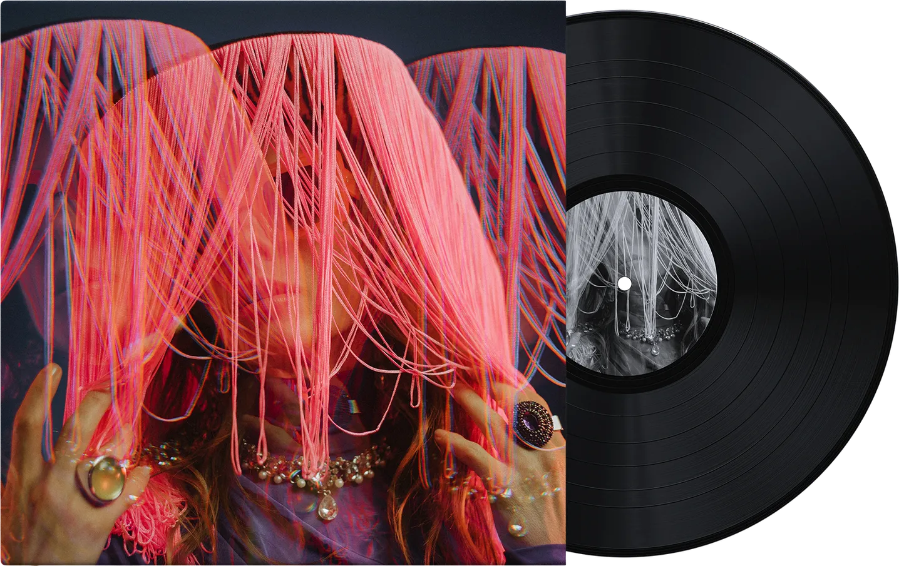

<section class="popular-songs">
  <div class="popular-songs__container container">
    <div class="popular-songs__header">
      <h2 class="popular-songs__title">
        <span class="popular-songs__title-icon">*</span>Popular Songs
      </h2>
      <p class="popular-songs__description">
        Explore our <span class="popular-songs__highlight">best songs</span> of
        the week, from rap to jazz. Work, dance, and dream with us.
      </p>
    </div>
    <div class="popular-songs__slider">
      <button
        class="popular-songs__button popular-songs__button--prev"
        type="button"
      >
        <svg
          xmlns="http://www.w3.org/2000/svg"
          class="popular-songs__icon"
          width="24"
          height="45"
          viewBox="0 0 24 45"
          fill="none"
        >
          <path
            d="M22 42.2576L2 22.1288L22 2"
            stroke="#F5F3F3"
            stroke-width="4"
            stroke-linecap="round"
            stroke-linejoin="round"
          />
        </svg>
      </button>
      <ul class="popular-songs__list">
        <li class="popular-songs__item">
          <article class="popular-songs__card">
            
            <p class="popular-songs__genre">Rap</p>
            <h3 class="popular-songs__name">Celestial Whispers</h3>
            <p class="popular-songs__artist">TwoWrack</p>
          </article>
        </li>
        <li class="popular-songs__item">
          <article class="popular-songs__card">
            
            <p class="popular-songs__genre">Dream Pop</p>
            <h3 class="popular-songs__name">Morning, Love</h3>
            <p class="popular-songs__artist">Luna Solitaire</p>
          </article>
        </li>
        <li class="popular-songs__item">
          <article class="popular-songs__card">
            
            <p class="popular-songs__genre">Techno</p>
            <h3 class="popular-songs__name">Golden Hour</h3>
            <p class="popular-songs__artist">David Guetti</p>
          </article>
        </li>
        <li class="popular-songs__item">
          <article class="popular-songs__card">
            
            <p class="popular-songs__genre">Soul</p>
            <h3 class="popular-songs__name">Saudade</h3>
            <p class="popular-songs__artist">Jack Welsh</p>
          </article>
        </li>
        <li class="popular-songs__item">
          <article class="popular-songs__card">
            
            <p class="popular-songs__genre">Jazz</p>
            <h3 class="popular-songs__name">City Lights</h3>
            <p class="popular-songs__artist">Lucy Ingoo</p>
          </article>
        </li>
      </ul>
      <button
        class="popular-songs__button popular-songs__button--next"
        type="button"
      >
        <svg
          xmlns="http://www.w3.org/2000/svg"
          class="popular-songs__icon"
          width="25"
          height="45"
          viewBox="0 0 25 45"
          fill="none"
        >
          <path
            d="M2.00002 2.03103L22.0308 22.1288L2.06161 42.2886"
            stroke="#F5F3F3"
            stroke-width="4"
            stroke-linecap="round"
            stroke-linejoin="round"
          />
        </svg>
      </button>
    </div>
  </div>
</section>
